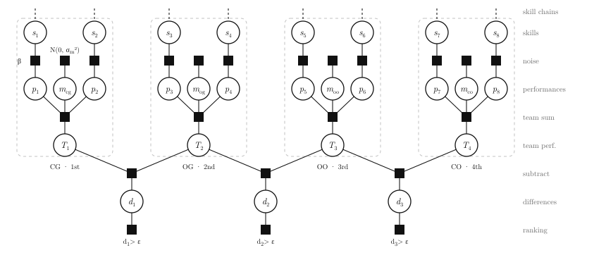

DebaterSkill
A skill-rating engine for competitive British Parliamentary debate. It fits TrueSkill Through Time over tournament results, and powers the ratings behind BP Debate Directory.
Python
C++
pybind11
TrueSkill Through Time
Factor graphs